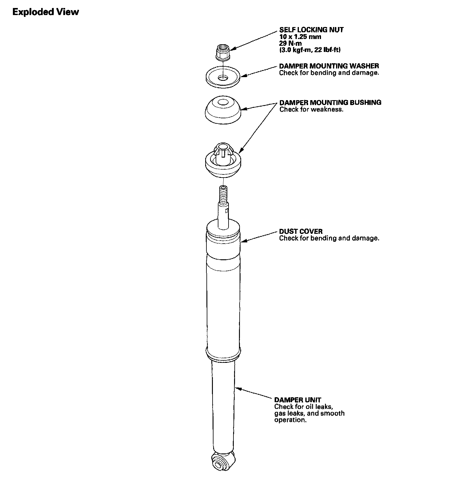
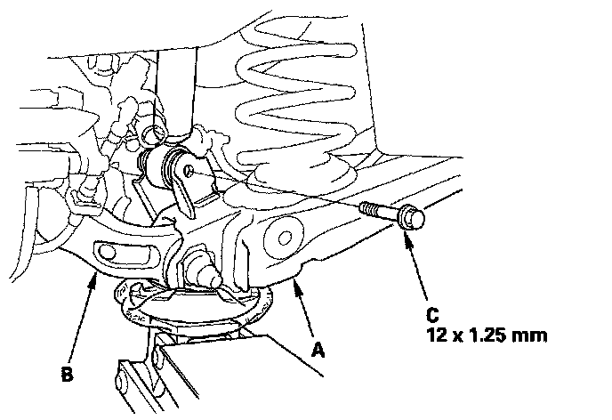
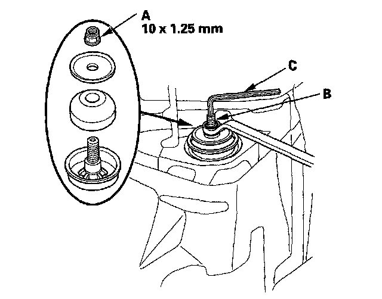
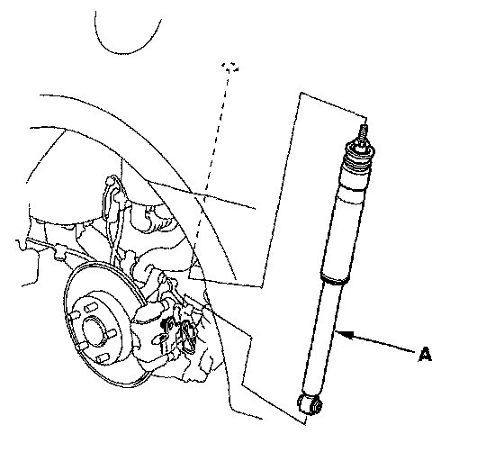
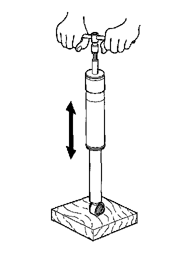
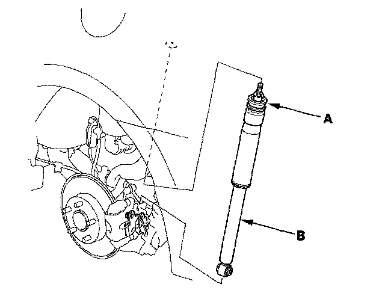
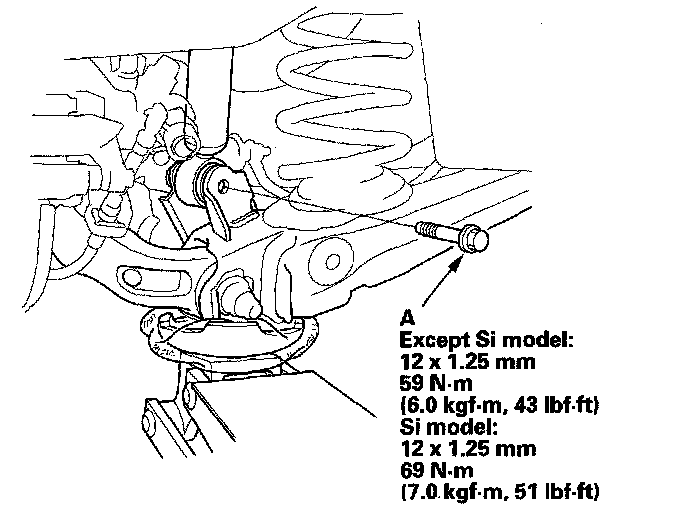
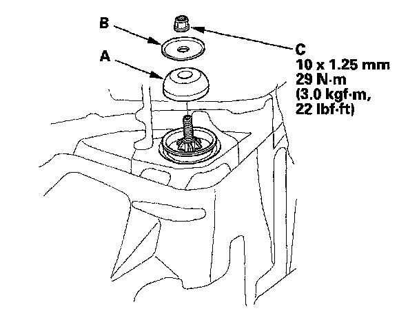
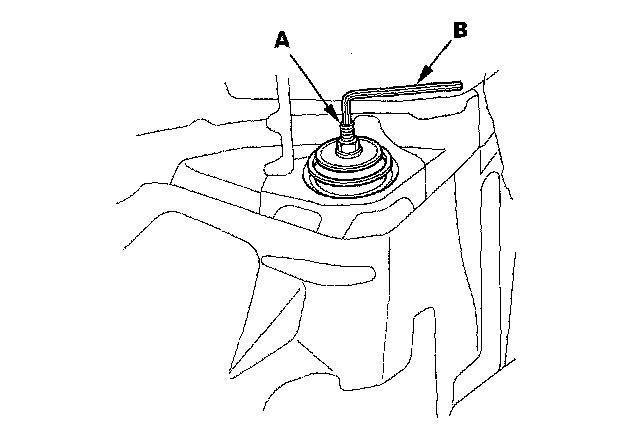

Rear Suspension
Damper ReplacementDamper:

Removal
1. Raise the rear of the vehicle, and support it with safety stands in the proper locations.
2. Remove the rear wheel.
3. Position a floor jack at the connecting point of the trailing arm (A) and the knuckle (B). Raise the floor jack until the suspension begins to compress.

4. Remove the flange bolt (C) from the bottom of the damper.
5. Remove the trunk side trim panel.
6. Remove the self-locking nut (A) while holding the damper shaft (B) with a hex wrench (C).

7. Compress the damper unit (A) by hand, and remove it from the vehicle.

Inspection
1. Push on the damper as shown.

2. Compress the damper assembly by hand, and check for smooth operation through a full stroke, both compression and extension. The damper should extend smoothly and constantly when compression is released. If it does not, the gas is leaking and the damper should be replaced.
3. Check for oil leaks, abnormal noises, or binding during these tests.
Installation
1. Install the damper mounting bushing (A) onto the damper unit. Position the damper assembly (B) between the body and trailing arm. Be careful not to damage the body.

2. Position a jack under the trailing arm to support the suspension, then install a new damper mounting bolt (A).

3. Loosely tighten the damper mounting bolt.
4. Raise the rear suspension with the jack until the vehicle just lifts off the safety stands, then tighten the damper mounting bolt to the specified torque value.
5. Install the damper mounting bushing (A), the damper mounting washer (B), and a new self locking nut (C) on the damper shaft.

6. Tighten the self-locking nut to the specified torque value while holding the damper shaft (A) with a hex wrench (B).

7. Install the trunk side trim panel.
8. Install the rear wheel.
NOTE: Before installing the wheel, clean the mating surface of the brake disc or brake drum and the inside of the wheel.
9. Check the wheel alignment, and adjust it if necessary.